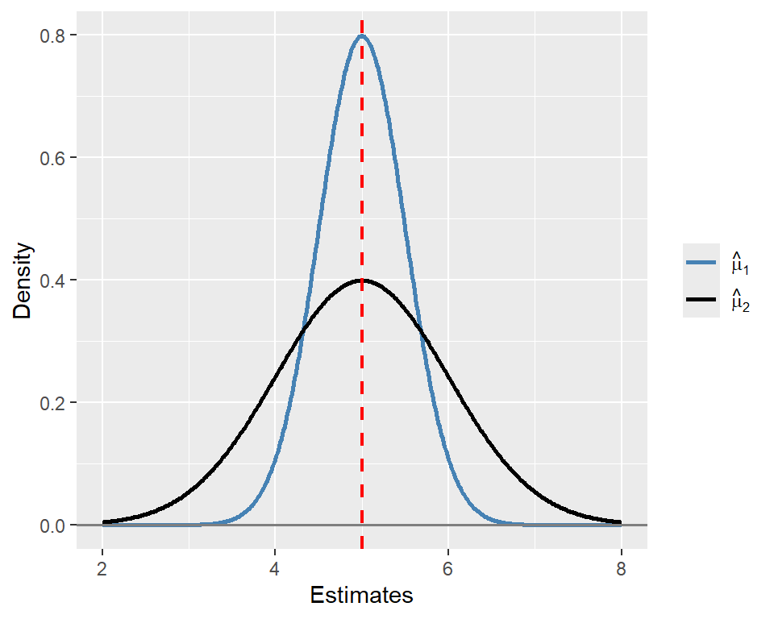
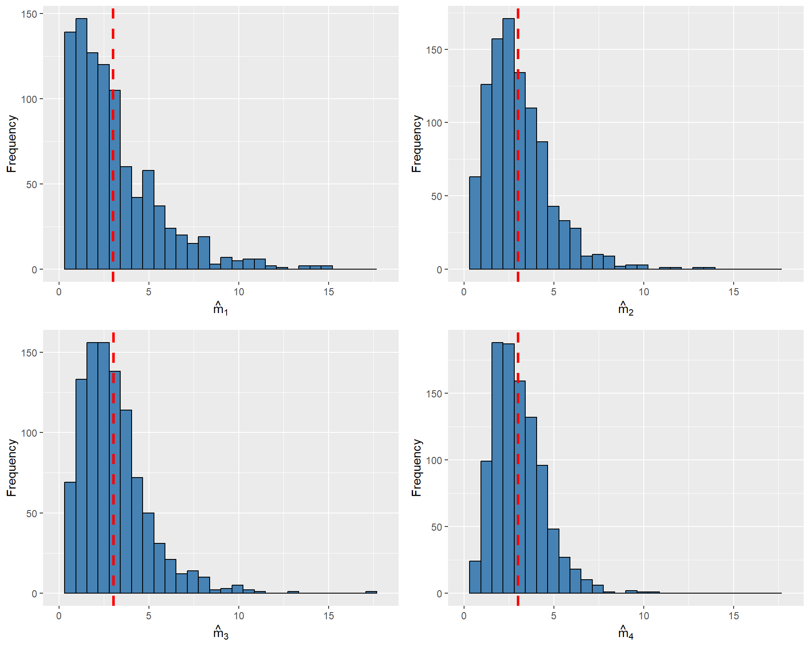
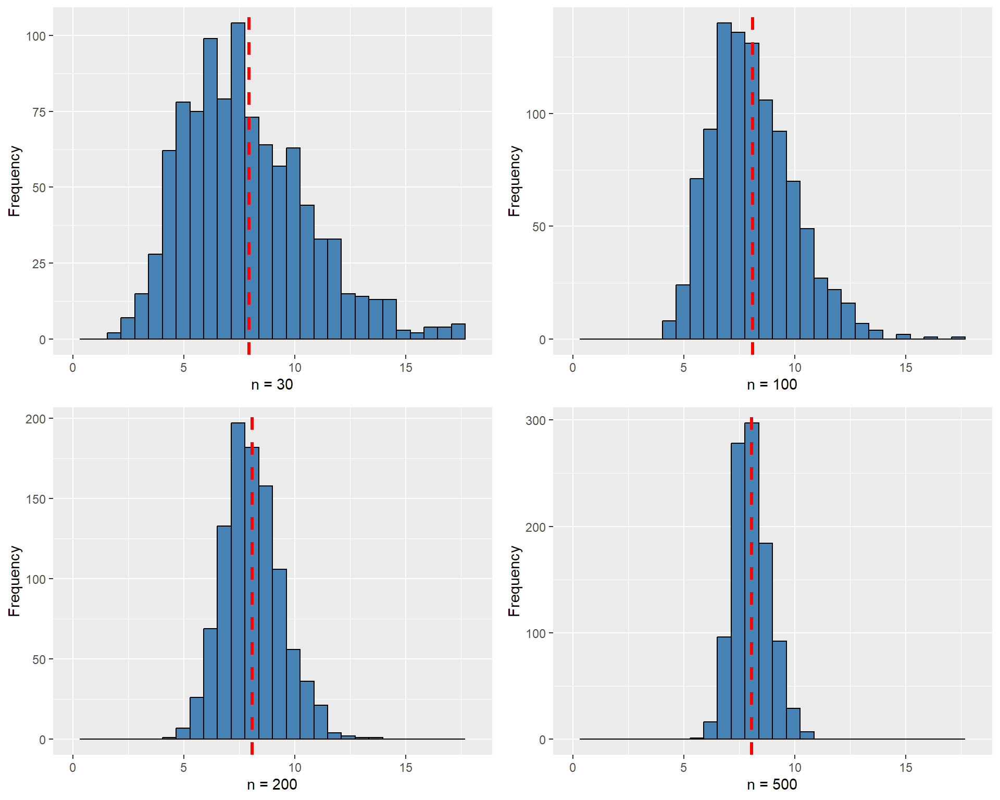
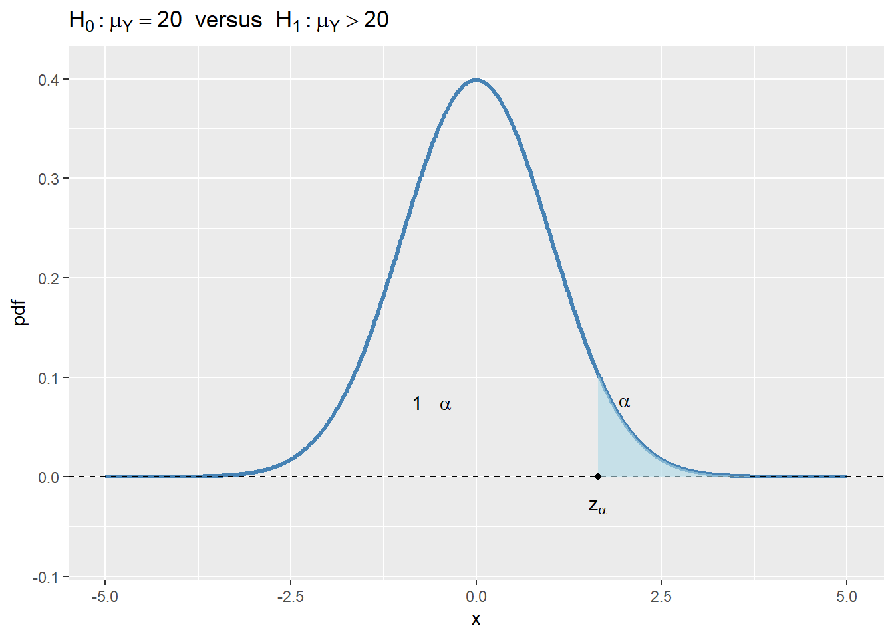
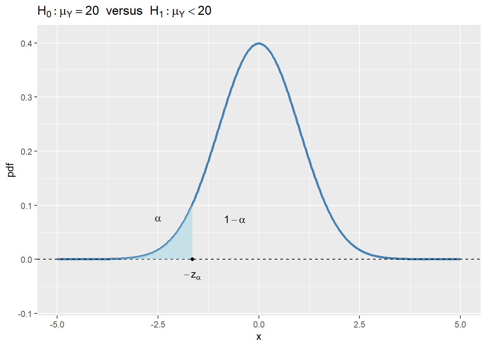
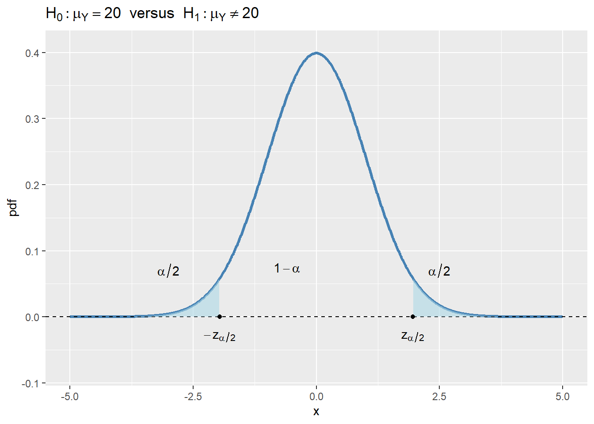
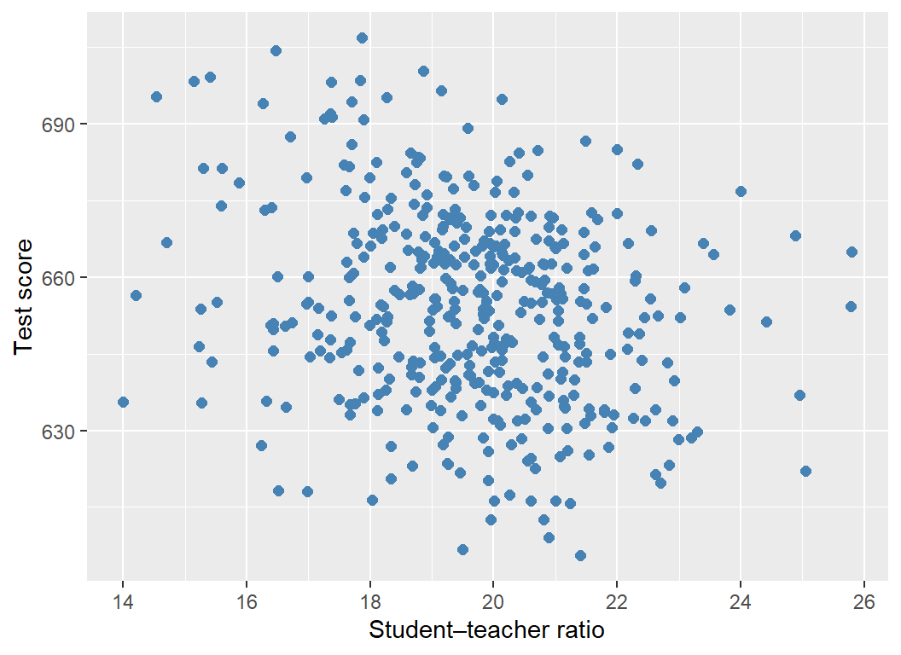
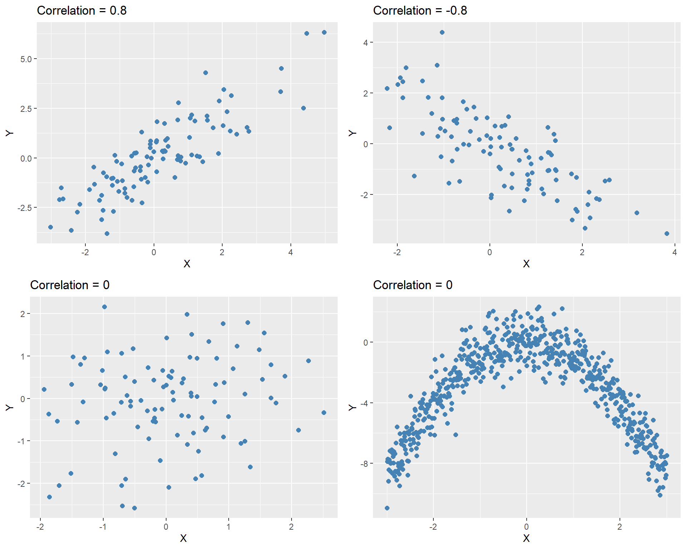

12 Review of Statistics
12.1 Estimators and their properties
Let \(Y_1, Y_2, \dots, Y_n\) be an i.i.d. random sample from a population distribution with mean \(\mu_Y\) and variance \(\sigma_Y^2\). We aim to use this sample to learn about unknown characteristics of the population distribution, such as its mean, variance, and other parameters. To achieve this, we construct estimators.
Definition 12.1 (Estimator and estimate) An estimator is a statistic formulated from \(\{Y_1,Y_2,\dots,Y_n\}\) to estimate an unknown characteristic of the population distribution. An estimate is the numerical value obtained by computing the estimator using data from a specific sample.
Note that an estimator is a random variable because it is formulated from the sample \(\{Y_1,Y_2,\dots,Y_n\}\), which is a random sample. On the other hand, an estimate is a constant because it is computed from the realization of a specific sample \(\{Y_1,Y_2,\dots,Y_n\}\), i.e., it is a realization of the estimator.
Example 12.1 If the unknown characteristic is the population mean \(\mu_Y\), then the estimator of \(\mu_Y\) is a statistic formulated from \(\{Y_1,Y_2,\dots,Y_n\}\), such as \(\hat{\mu}_Y=\bar{Y}=\frac{1}{n}\sum_{i=1}^nY_i\). The estimate of \(\mu_Y\) is the numerical value of \(\hat{\mu}_Y\) when it is computed using data from a specific sample, e.g., \(\hat{\mu}_Y=5.2\).
Since estimators are random variables, they have associated probability distributions, known as sampling distributions.
Definition 12.2 (Sampling distribution of an estimator) Let \(\hat{\mu}_Y\) be an estimator of the population parameter \(\mu_Y\). The probability distribution of \(\hat{\mu}_Y\) is called the sampling distribution of \(\hat{\mu}_Y\).
Intuitively, the sampling distribution of an estimator is the probability distribution obtained by computing the estimator across all possible samples of size \(n\) drawn from the population. It provides insight into how the estimator behaves across different samples and is essential for understanding its properties, such as bias, consistency, and efficiency.
Definition 12.3 (Properties of an estimator) Let \(\hat{\mu}_Y\) be an estimator of the population parameter \(\mu_Y\).
- We say that \(\hat{\mu}_Y\) is unbiased estimator if \(\E(\hat{\mu}_Y)=\mu_Y\).
- We say that \(\hat{\mu}_Y\) is a consistent estimator if \(\hat{\mu}_Y\xrightarrow{p}\mu_Y\) as the sample size tends to infinity.
- Let \(\tilde{\mu}_Y\) be another estimator of \(\mu_Y\), and suppose that both \(\hat{\mu}_Y\) and \(\tilde{\mu}_Y\) are unbiased. Then, \(\hat{\mu}_Y\) said to be more efficient (or precise) than \(\tilde{\mu}_Y\) if \(\text{var}(\hat{\mu}_Y) < \text{var}(\tilde{\mu}_Y)\).
The unbiasedness property implies that the sampling distribution of the estimator \(\hat{\mu}_Y\) is centered around the true value of the population parameter \(\mu_Y\). The bias of \(\hat{\mu}_Y\) is defined as \(\text{Bias}(\hat{\mu}_Y) = \mathbb{E}(\hat{\mu}_Y) - \mu_Y\). The consistency property indicates that as the sample size increases, the sampling distribution of \(\hat{\mu}_Y\) becomes increasingly concentrated around the true value \(\mu_Y\). Among all unbiased and consistent estimators, we prefer the one with the smallest variance, known as the most efficient estimator.
Example 12.2 Let \(\hat{\mu}_1\) and \(\hat{\mu}_2\) be two unbiased estimators of \(\mu_Y = 5\). Assume that the sampling distribution of \(\hat{\mu}_1\) is \(N(5, 0.5)\) and that of \(\hat{\mu}_2\) is \(N(5, 1)\). Then, we have \(\mathbb{E}(\hat{\mu}_1) = \mathbb{E}(\hat{\mu}_2) = 5\), indicating that both estimators are unbiased. However, \(\hat{\mu}_1\) is more efficient than \(\hat{\mu}_2\) because \(\text{Var}(\hat{\mu}_1) = 0.5 < \text{Var}(\hat{\mu}_2) = 1\). In Figure 12.1, we plot the sampling distributions of \(\hat{\mu}_1\) and \(\hat{\mu}_2\). Although both sampling distributions are centered at \(\mu_Y\), the sampling distribution of \(\hat{\mu}_1\) is more concentrated around \(\mu_Y\) than that of \(\hat{\mu}_2\), indicating that \(\hat{\mu}_1\) is more efficient than \(\hat{\mu}_2\).
# Data
x <- seq(2, 8, length.out = 500)
mu_Y <- 5
df <- data.frame(
x = rep(x, 2),
pdf = c(dnorm(x, mean = mu_Y, sd = 0.5),
dnorm(x, mean = mu_Y, sd = 1)),
estimator = factor(rep(c("hat_mu1", "hat_mu2"), each = length(x)))
)
# Plot
ggplot(df, aes(x = x, y = pdf, color = estimator)) +
geom_line(linewidth = 1) +
geom_vline(xintercept = mu_Y, linetype = "dashed", linewidth = 0.8, color = "red") +
geom_hline(yintercept = 0, linetype = "solid", linewidth = 0.6, color = "gray50") +
scale_color_manual(values = c("hat_mu1" = "steelblue", "hat_mu2" = "black"),
labels = c("hat_mu1" = expression(hat(mu)[1]),
"hat_mu2" = expression(hat(mu)[2]))) +
labs(x = "Estimates",
y = "Density",
color = "") +
theme(legend.position = "right",
legend.title = element_blank())
Among the biased estimators, we may choose the one that minimizes the mean squared error (MSE), which is defined as \(\text{MSE}(\hat{\mu}_Y) = \E((\hat{\mu}_Y - \mu_Y)^2)\). The MSE provides a measure of the average squared deviation of the estimator \(\hat{\mu}_Y\) from the true value \(\mu_Y\). It can be decomposed into the variance and the square of the bias: \[ \begin{align*} \text{MSE}(\hat{\mu}_Y) &= \E((\hat{\mu}_Y - \mu_Y)^2) = \E((\hat{\mu}_Y - \E(\hat{\mu}_Y) + \E(\hat{\mu}_Y) - \mu_Y)^2)\\ &= \E((\hat{\mu}_Y - \E(\hat{\mu}_Y))^2) + 2\E((\hat{\mu}_Y - \E(\hat{\mu}_Y))(\E(\hat{\mu}_Y) - \mu_Y)) + (\E(\hat{\mu}_Y) - \mu_Y)^2\\ &= \text{var}(\hat{\mu}_Y) + \text{Bias}^2(\hat{\mu}_Y). \end{align*} \]
12.2 Estimation of the population mean
Let \(Y_1,Y_2,\dots,Y_n\) be i.i.d. random variables from a population that has mean \(\mu_Y\) and variance \(\sigma_Y^2\). In Chapter 11, we show that \(\E(\bar{Y})=\mu_Y\) and \(\text{var}(\bar{Y})=\sigma^2_Y/n\). Thus, \(\bar{Y}\) is an unbiased estimator of \(\mu_Y\) and a consistent estimator of \(\mu_Y\) by the law of large numbers. Thus, we have \(\text{MSE}(\bar{Y}) = \text{var}(\bar{Y}) = \sigma^2_Y/n\), which converges to \(0\) as \(n\to\infty\). Stock and Watson (2020) show that \(\bar{Y}\) is the most efficient estimator among the estimators that are formulated as a linear function of \(Y_1,Y_2,\dots,Y_n\).
In Key Concept 10.1, we claim that \(\bar{Y}\) is the most efficient estimator among all unbiased estimators that are linear functions of \(Y_1,Y_2,\dots,Y_n\). Hansen (2022) shows that \(\bar{Y}\) is the most efficient estimator among all unbiased estimators, including those that are nonlinear functions of \(Y_1,Y_2,\dots,Y_n\).
Example 12.3 Let \(Y_1\), \(Y_2\) and \(Y_3\) be a random sample from \(\chi^2_m\). We consider the following four estimators for estimating \(m\): \(\hat{m}_1=Y_1\), \(\hat{m}_2=\frac{Y_1+Y_2}{2}\), \(\hat{m}_3=\frac{Y_1+2Y_2}{3}\), and \(\hat{m}_4=\bar{Y}\). Note that if \(Y\sim\chi^2_m\), then \(\E(Y)=m\) and \(\text{var}(Y)=2m\). Using these two moments, we can show the following properties:
- \(\E(\hat{m}_1)=\E(Y_1)=m\) and \(\var(\hat{m}_1)=\var(Y_1)=2m\).
- \(\E(\hat{m}_2)=\frac{\E(Y_1)+\E(Y_2)}{2}=m\) and \(\var(\hat{m}_2)=\frac{\var(Y_1)+\var(Y_2)}{4}=m\).
- \(\E(\hat{m}_3)=\frac{\E(Y_1)+2\E(Y_2)}{3}=m\) and \(\var(\hat{m}_3)=\frac{\var(Y_1)+4\var(Y_2)}{9}=10m/9\).
- \(\E(\hat{m}_4)=\frac{\E(Y_1+Y_2+Y_3)}{3}=m\) and \(\var(\hat{m}_4)=\frac{\var(Y_1)+\var(Y_2)+\var(Y_3)}{9}=6m/9\).
All four estimators are unbiased, with \(\hat{m}_4\) being the most efficient. In the following code chunk, we resample \(Y_1\), \(Y_2\), and \(Y_3\) from the \(\chi^2_3\) distribution \(1000\) times and compute each estimator for every resample. Figure 12.2 illustrates the sampling distribution of each estimator. As all estimators are unbiased, their estimated means are close to \(m = 3\). The figure also shows that \(\hat{m}_4\) is relatively more efficient, as its sampling distribution is more tightly clustered around its mean.
set.seed(54321)
r <- 1000
m <- 3
# Simulate data
Y1 <- rchisq(r, df = m)
Y2 <- rchisq(r, df = m)
Y3 <- rchisq(r, df = m)
m1 <- Y1
m2 <- (Y1 + Y2) / 2
m3 <- (Y1 + 2 * Y2) / 3
m4 <- (Y1 + Y2 + Y3) / 3
# Means
mean_m1 <- mean(m1)
mean_m2 <- mean(m2)
mean_m3 <- mean(m3)
mean_m4 <- mean(m4)
# Function to generate a histogram with vertical mean line
plot_histogram <- function(data, label, mean_value) {
ggplot(data.frame(x = data), aes(x)) +
geom_histogram(bins = 30, fill = "steelblue", color = "black") +
geom_vline(xintercept = mean_value, color = "red", linetype = "dashed", linewidth = 1.1) +
xlim(0, 18) +
labs(x = label, y = "Frequency")
}
# Generate four plots
p1 <- plot_histogram(m1, expression(hat(m)[1]), mean_m1)
p2 <- plot_histogram(m2, expression(hat(m)[2]), mean_m2)
p3 <- plot_histogram(m3, expression(hat(m)[3]), mean_m3)
p4 <- plot_histogram(m4, expression(hat(m)[4]), mean_m4)
# Combine using gridExtra
grid.arrange(p1, p2, p3, p4, ncol = 2)
12.3 Estimation of the population variance
Let \(Y_1,Y_2,\dots,Y_n\) be i.i.d. random variables with \(\E(Y_i)=\mu_Y\), \(\var(Y_i)=\sigma^2_Y\), and \(\E(Y^4_i)<\infty\). Consider the sample variance given by \[ s^2_Y=\frac{1}{n-1}\sum_{i=1}^n(Y_i-\bar{Y})^2. \]
We first show that \(\E(s^2_Y)=\sigma^2_Y\) and then use the law of large numbers introduced in Chapter 11 to show that \(s^2_Y\xrightarrow{p}\sigma^2_Y\).
First, note that \(\sum_{i=1}^n(Y_i-\bar{Y})^2=\sum_{i=1}^nY^2_i-n\bar{Y}^2\). Then, we can express \(\E(s^2_Y)\) as \[ \begin{align*} \E(s^2_Y)&=\E\left(\frac{1}{n-1}\sum_{i=1}^n(Y_i-\bar{Y})^2\right)=\frac{1}{n-1}\E\left(\sum_{i=1}^nY^2_i-n\bar{Y}^2\right)\\ &=\frac{1}{n-1}\left(\E\left(\sum_{i=1}^nY^2_i\right)-n\E(\bar{Y}^2)\right). \end{align*} \]
The variance computation formula \(\var(Y_i)=\E(Y^2_i)-(\E(Y_i))^2\) gives \(\E(Y^2_i)=\sigma^2_Y+\mu^2_Y\). Then, we have the following two expectations: \[ \begin{align*} &(1)\, \E\left(\sum_{i=1}^nY^2_i\right)=\sum_{i=1}^n\E\left(Y^2_i\right)=\sum_{i=1}^n\left(\var(Y_i)+\left(\E(Y_i)\right)^2\right)=n(\sigma^2_Y+\mu^2_Y),\\ &(2)\,\E(\bar{Y}^2)=\var(\bar{Y})+\left(\E(\bar{Y})\right)^2=\frac{\sigma^2_Y}{n}+\mu^2_Y. \end{align*} \]
Substituting (1) and (2) into \(\E(s^2_Y)\), we obtain \[ \begin{align*} \E(s^2_Y)=\frac{1}{n-1}\left(n(\sigma^2_Y+\mu^2_Y)-n(\sigma^2_Y/n+\mu^2_Y)\right)=\sigma^2_Y, \end{align*} \] which shows that \(s^2_Y\) is an unbiased estimator of \(\sigma^2_Y\).
To show that \(s^2_Y\xrightarrow{p}\sigma^2_Y\), we first consider the following expression: \[ \begin{align*} \frac{1}{n}\sum_{i=1}^n(Y_i-\bar{Y})^2=\frac{1}{n}\sum_{i=1}^nY^2_i-\bar{Y}^2. \end{align*} \]
By the law of large numbers, \(\frac{1}{n}\sum_{i=1}^nY^2_i\xrightarrow{p}\E(Y^2_i)\) because \(\{Y^2_i\}\) are i.i.d. and \(\E(Y^4_i)<\infty\). Also note that \(\bar{Y}^2\xrightarrow{p}\mu^2_Y\). Thus, \[ \begin{align*} \frac{1}{n}\sum_{i=1}^n(Y_i-\bar{Y})^2=\frac{1}{n}\sum_{i=1}^nY^2_i-\bar{Y}^2\xrightarrow{p}(\sigma^2_Y+\mu^2_Y)-\mu^2_Y=\sigma^2_Y. \end{align*} \]
Finally, \(s^2_Y=\left(\frac{n}{n-1}\right)\left(\frac{1}{n}\sum_{i=1}^n(Y_i-\bar{Y})^2\right)\xrightarrow{p}\sigma^2_Y\) follows because \(\frac{n}{n-1}\to1\).
These results suggest that we can estimate \(\var(\bar{Y})=\sigma^2_Y/n\) by \(\widehat{\var}(\bar{Y})=s^2_Y/n\).
Example 12.4 For illustrating \(\E(s^2_Y) = \sigma^2_Y\) and \(s^2_Y \xrightarrow{p} \sigma^2_Y\), we assume that \(Y_1, Y_2, \dots, Y_n\) are i.i.d. random variables from the \(\chi^2_4\) distribution. Recall that if \(Y \sim \chi^2_4\), then \(\sigma^2_Y = 8\). In the following simulation exercise, we compute the sample variance \(1000\) times for different sample sizes, with \(n \in \{30, 100, 200, 500\}\). We then generate histogram plots of the sample variances. The simulation results are shown in Figure 12.3. The figure indicates that, as the sample size increases, the mean of the sample variances gets closer to the true value \(8\). Moreover, the sampling distribution becomes more tightly concentrated around the mean.
# Parameters
reps <- 1000
sample_sizes <- c(30, 100, 200, 500)
m <- 4 # degrees of freedom
set.seed(45)
# Function to simulate sample variance and return plot
plot_var_dist <- function(n) {
# Simulate sample variances
vars <- replicate(reps, var(rchisq(n, df = m)))
v_mean <- mean(vars)
ggplot(data.frame(x = vars), aes(x)) +
geom_histogram(bins = 30, fill = "steelblue", color = "black") +
geom_vline(xintercept = v_mean, color = "red", linetype = "dashed", linewidth = 1.2) +
xlim(0, 18) +
labs(x = paste0("n = ", n), y = "Frequency") +
theme(legend.position = "none")
}
# Create the 4 plots
p_list <- lapply(sample_sizes, plot_var_dist)
# Arrange into 2×2 panel
grid.arrange(p_list[[1]], p_list[[2]], p_list[[3]], p_list[[4]], ncol = 2)
12.4 Hypothesis tests concerning the population mean
A hypothesis is a claim about a characteristic of a random variable, such as its mean, variance, and some other parameters. We refer to the hypothesis being tested as the null hypothesis, denoted by \(H_0\). The scenario in which the null hypothesis does not hold is described by the alternative hypothesis, denoted by \(H_1\).
Example 12.5 Let \(Y\) denote the hourly earnings of recent college graduates. If we conjecture that, on average, college graduates earn $20 per hour, this translates to \(H_0: \mu_Y = 20\). Against this null hypothesis, we can formulate the following alternative hypotheses:
- Two-sided alternative hypothesis: \(H_1: \mu_Y \ne 20\).
- One-sided alternative hypothesis: \(H_1: \mu_Y > 20\) or \(H_1: \mu_Y < 20\).
The null value (or the hypothesized value) is the specified value of the population parameter under the null hypothesis \(H_0\). In this example, the null value is $20.
In hypothesis testing, we use sample data to test the null hypothesis \(H_0\) against the alternative hypothesis \(H_1\). The goal is to determine whether there is sufficient evidence in the sample to reject the null hypothesis in favor of the alternative. The testing process involves the following steps:
- State the null \(H_0\) and the alternative \(H_1\),
- Choose a significance level for the test,
- Calculate a test statistics to test \(H_0\),
- Decide whether to reject \(H_0\) or not.
In this process, we can commit two types of errors: Type-I error and Type-II error. We commit Type-I error if we reject the true \(H_0\), and Type-II error if we fail to reject the false \(H_0\). Since we cannot simultaneously minimize the likelihood of both errors, we choose a significance level, denoted by \(\alpha\), for committing the Type-I error, and then work to minimize the likelihood of committing the Type-II error. You can think of the significance level of the test as your tolerance for rejecting a true null hypothesis \(H_0\). The conventional significance levels are \(1\%\), \(5\%\), and \(10\%\). For example, if we use \(\alpha = 0.05\), then we accept the possibility of rejecting a true null hypothesis \(5\) times out of \(100\) resamples.
We consider the following \(t\) statistic as our test statistic: \[ \begin{align} t &= \frac{\bar{Y} - \mu_Y}{s_{\bar{Y}}}, \end{align} \tag{12.1}\]
where \(s_{\bar{Y}} = \sqrt{s_Y^2/n}= s_Y/\sqrt{n}\) is the standard error of \(\bar{Y}\). By the central limit theorem introduced in Chapter 11, under \(H_0\), the sampling distribution of \(t\) statistic can be approximated by the standard normal distribution when \(n\) is large, i.e., \[ \begin{align} t &= \frac{\bar{Y} - \mu_Y}{s_{\bar{Y}}}\xrightarrow{d} N(0,1). \end{align} \tag{12.2}\]
We then can use the significance level, the alternative hypothesis, and the distribution of the test statistic to determine the rejection regions.
- For \(H_1:\mu_Y>20\), the rejection region is \(\{t>z_{\alpha}\}\), where \(z_{\alpha}\) is the critical value of the standard normal distribution at the significance level \(\alpha\).
- For \(H_1:\mu_Y<20\), the rejection region is \(\{t<-z_{\alpha}\}\), where \(-z_{\alpha}\) is the critical value of the standard normal distribution at the significance level \(\alpha\).
- For \(H_1:\mu_Y\ne20\), the rejection region is \(\{|t|>z_{\alpha/2}\}\), where \(z_{\alpha/2}\) is the critical value of the standard normal distribution at the significance level \(\alpha/2\).
In Figure 12.4, we show the rejection regions according to the type of \(H_1\). In the figure, the critical values are \(z_{\alpha}\), \(-z_{\alpha}\), \(-z_{\alpha/2}\), and \(z_{\alpha/2}\). The critical value, which is the threshold that separates the rejection region from the non-rejection region, depends on the significance level \(\alpha\) and the alternative hypothesis \(H_1\):
- In the case of \(H_1:\mu_Y>20\), the critical value \(z_{\alpha}\) is the \(1-\alpha\) quantile of the sampling distribution of the test statistic.
- In the case of \(H_1:\mu_Y<20\), the critical value \(-z_{\alpha}\) is the \(\alpha\) quantile of the sampling distribution of the test statistic.
- If we consider the two-sided alternative hypothesis \(H_1:\mu_Y\ne20\), then the critical values are \(-z_{\alpha/2}\) and \(z_{\alpha/2}\), which are the \(\alpha/2\) and \(1-\alpha/2\) quantiles of the sampling distribution of the test statistic, respectively.
If the realized value of \(t\) is in the rejection region, we reject the null hypothesis \(H_0\); otherwise, we fail to reject \(H_0\). Intuitively, if the realized value of \(t\) is in the rejection region, it means that the sample mean \(\bar{Y}\) is far away from the null value \(\mu_Y=20\), which suggests that the null hypothesis \(H_0\) can not be true.
# Rejection Regions
alpha <- 0.05
x <- seq(-5, 5, length.out = 1000)
pdf <- dnorm(x)
# Critical values
z_alpha <- qnorm(1 - alpha)
z_alpha2 <- qnorm(1 - alpha/2)
df <- data.frame(x = x, pdf = pdf)
base_plot <- function() {
ggplot(df, aes(x, pdf)) +
geom_line(linewidth = 1.1, color = "steelblue") +
geom_hline(yintercept = 0, linetype = "dashed", color = "black") +
coord_cartesian(xlim = c(-5, 5), ylim = c(-0.08, max(pdf) + 0.01))
}
# 1. Upper-tailed region: x > z_alpha
p1 <- base_plot() +
geom_ribbon(
data = subset(df, x >= z_alpha),
aes(ymin = 0, ymax = pdf),
fill = "lightblue", alpha = 0.6
) +
geom_point(aes(x = z_alpha, y = 0)) +
annotate("text", x = -0.6, y = 0.075, label = "1 - alpha", parse = TRUE) +
annotate("text", x = 2, y = 0.075, label = "alpha", parse = TRUE) +
annotate("text", x = z_alpha, y = -0.03, label = "z[alpha]", parse = TRUE) +
ggtitle(expression(H[0] : mu[Y] == 20 ~ " versus " ~ H[1] : mu[Y] > 20))
# 2. Lower-tailed region: x < qnorm(alpha)
p2 <- base_plot() +
geom_ribbon(
data = subset(df, x <= qnorm(alpha)),
aes(ymin = 0, ymax = pdf),
fill = "lightblue", alpha = 0.6
) +
geom_point(aes(x = qnorm(alpha), y = 0)) +
annotate("text", x = -0.6, y = 0.075, label = "1 - alpha", parse = TRUE) +
annotate("text", x = -2.5, y = 0.075, label = "alpha", parse = TRUE) +
annotate("text", x = -z_alpha, y = -0.03, label = "-z[alpha]", parse = TRUE) +
ggtitle(expression(H[0] : mu[Y] == 20 ~ " versus " ~ H[1] : mu[Y] < 20))
# 3. Two-tailed region: x < -z_alpha2 and x > z_alpha2
p3 <- base_plot() +
# Left tail
geom_ribbon(
data = subset(df, x <= -z_alpha2),
aes(ymin = 0, ymax = pdf),
fill = "lightblue", alpha = 0.6
) +
# Right tail
geom_ribbon(
data = subset(df, x >= z_alpha2),
aes(ymin = 0, ymax = pdf),
fill = "lightblue", alpha = 0.6
) +
geom_point(aes(x = -z_alpha2, y = 0)) +
geom_point(aes(x = z_alpha2, y = 0)) +
annotate("text", x = -0.6, y = 0.075, label = "1 - alpha", parse = TRUE) +
annotate("text", x = -3, y = 0.07, label = "alpha/2", parse = TRUE) +
annotate("text", x = 2.5, y = 0.07, label = "alpha/2", parse = TRUE) +
annotate("text", x = z_alpha2, y = -0.03, label = "z[alpha/2]", parse = TRUE) +
annotate("text", x = -z_alpha2, y = -0.03, label = "-z[alpha/2]", parse = TRUE) +
ggtitle(expression(H[0] : mu[Y] == 20 ~ " versus " ~ H[1] : mu[Y] != 20))
# Arrange side-by-side
p1
p2
p3


Example 12.6 Assume that \(\alpha = 5%\) and the alternative hypothesis is specified as \(H_1: \mu_Y \neq 20\). Then, the critical value on the left tail is the \(2.5\)th percentile of \(N(0,1)\), which is \(-z_{\alpha/2} = -1.96\), and the critical value on the right tail is the \(97.5\)th percentile of \(N(0,1)\), which is \(z_{\alpha/2} = 1.96\). Using R, we can compute the critical values as follows:
Left critical value: -1.96Right critical value: 1.96If we obtain \(t=\frac{\bar{Y} - 20}{s_{\bar{Y}}}=2\), then we will reject \(H_0\) because the test statistic value is in the rejection region, i.e., \(2>z_{\alpha/2}=1.96\).
Instead of using the critical values and the rejection regions to test \(H_0\), we can also use the \(p\)-value.
Definition 12.4 (The \(p\)-value) The \(p\)-value is the probability of obtaining a test statistic value that is more extreme than the actual one when the null is correct.
Let \(t_{\text{calc}}\) be the value of the test statistic obtained from Equation 12.1. Then, the \(p\)-value is defined by \[ \begin{align*} \text{$p$-value}= \begin{cases} P_{H_0}\left(t > |t_{\text{calc}}|\right), \quad&\text{for }H_1:\mu_Y>20,\\ P_{H_0}\left(t <-|t_{\text{calc}}|\right), \quad&\text{for }H_1:\mu_Y<20,\\ P_{H_0}\left(|t| > |t_{\text{calc}}|\right), \quad&\text{for }H_1:\mu_Y\ne20, \end{cases} \end{align*} \] where \(P_{H_0}\) means the probability is calculated from the distribution of the test statistic under the null hypothesis. Since the asymptotic distribution of \(t\) statistic is \(N(0,1)\) as shown in Equation 12.2, we have \[ \begin{align*} \text{$p$-value}= \begin{cases} P_{H_0}\left(t > |t_{\text{calc}}|\right)=1-\Phi(|t_{\text{calc}}|), \quad&\text{for }H_1:\mu_Y>20,\\ P_{H_0}\left(t <-|t_{\text{calc}}|\right)=\Phi(-|t_{\text{calc}}|), \quad&\text{for }H_1:\mu_Y<20,\\ P_{H_0}\left(|t| > |t_{\text{calc}}|\right)=2\times\Phi(-|t_{\text{calc}}|), \quad&\text{for }H_1:\mu_Y\ne20. \end{cases} \end{align*} \]
We reject the null hypothesis \(H_0\) at the significance level \(\alpha\) if the \(p\)-value is less than \(\alpha\). In other words, we reject \(H_0\) if the probability of obtaining a test statistic value that is more extreme than the actual one is small enough, which suggests the realized is already in the rejection region.
Example 12.7 Assume that \(\alpha=5\%\) and \(H_1:\mu_Y\ne20\). Suppose we obtained \(t=\frac{\bar{Y} - 20}{s_{\bar{Y}}}=2\). Then, \[ \begin{align*} \text{$p$-value}=P_{H_0}\left(|t| > 2\right)=P_{H_0}\left(t > 2\right)+P_{H_0}\left(t <- 2\right)=2\times\Phi(-2). \end{align*} \] We can compute the \(p\)-value using R as follows:
Since \(p-\)value \(=0.045<\alpha=0.05\), we reject \(H_0\) at the \(5\%\) significance level.
Note that we determine the critical values and \(p\)-values by assuming that the distribution result in Equation 12.2 holds, which requires a large sample size. That is, the standard normal distribution may not provide a good approximation to the sampling distribution of the t-statistic when the sample size is small. If we assume that \(Y_1,\dots,Y_n\) are i.i.d. random variables from \(N(\mu_Y,\sigma^2_Y)\), then it can be shown that
\[ \begin{align} t &= \frac{\bar{Y} - \mu_Y}{s_{\bar{Y}}}\sim t_{n-1}, \end{align} \tag{12.3}\]
where \(t_{n-1}\) is the Student t distribution with \(n-1\) degrees of freedom. The distribution result in Equation 12.3 is exact in the sense that it holds regardless of the sample size.
Recall that when \(n > 30\), the \(t\)-distribution and \(N(0,1)\) are very close (as \(n\) grows large, the \(t_{n-1}\) distribution converges to \(N(0,1)\)). Thus, as long as the sample size is larger than \(30\), we can rely on the standard normal distribution for the critical values and p-values. Therefore, Stock and Watson (2020) conclude that “inferences-hypothesis tests and confidence intervals-about the mean of a distribution should be based on the large-sample normal approximation.”
12.5 Confidence intervals for the population mean
We want to construct an interval for the population mean \(\mu_Y\) such that the true value of \(\mu_Y\) is contained in the interval with a pre-specified probability.
Definition 12.5 (Confidence interval) Let \(\alpha\) be the significance level. Then, a \(100(1-\alpha)\%\) confidence interval for the population mean \(\mu_Y\) is an interval that contains \(\mu_Y\) with probability \(1-\alpha\).
Let \(\alpha=0.05\). Then, one way to construct the \(95\%\) two-sided confidence interval for \(\mu_Y\) is to collect all values \(\mu_{Y,0}\) that cannot be rejected by the \(t\) statistic for testing \(H_0:\mu_Y=\mu_{Y,0}\) versus \(H_1:\mu_Y\ne\mu_{Y,0}\) at the \(5\%\) significance level. In other words, we collect all values \(\mu_{Y,0}\) for which the test statistic \(t\) in Equation 12.1 is not in the rejection region, i.e., \(|t|\le 1.96\). This construction implies that the 95% two-sided confidence interval for \(\mu_Y\) corresponds to the set of values satisfying \[ \begin{align*} P\left(\left\{\mu_Y: \left|\frac{\bar{Y} - \mu_Y}{s_Y/\sqrt{n}}\right| \le 1.96\right\}\right) = 0.95. \end{align*} \]
We can express the set \(\left\{\mu_Y: \left|\frac{\bar{Y} - \mu_Y}{s_Y/\sqrt{n}}\right| \le 1.96\right\}\) as follows: \[ \begin{align*} \left\{\mu_Y:\left|\frac{\bar{Y} - \mu_Y}{s_Y/\sqrt{n}}\right|\le 1.96\right\}&=\left\{\mu_Y:-1.96\le \frac{\bar{Y}-\mu_Y}{s_Y/\sqrt{n}}\le 1.96\right\}\\ &=\left\{\mu_Y:-\bar{Y} - 1.96\times s_Y/\sqrt{n}\le -\mu_Y \le -\bar{Y} + 1.96\times s_Y/\sqrt{n}\right\}\\ &=\left\{\mu_Y: \bar{Y} - 1.96\times s_Y/\sqrt{n} \le \mu_Y \le \bar{Y} + 1.96\times s_Y/\sqrt{n}\right\}\\ &=\left\{\mu_Y: \bar{Y} \pm 1.96 \times \text{SE}(\bar{Y})\right\}. \end{align*} \]
Thus, the lower bound of the confidence interval is \(\bar{Y} - 1.96 \times \text{SE}(\bar{Y})\) and the upper bound is \(\bar{Y} + 1.96 \times \text{SE}(\bar{Y})\), where \(\text{SE}(\bar{Y})=s_Y/\sqrt{n}\) is the standard error of \(\bar{Y}\). If we choose another pre-specified probability, say \(90\%\) or \(99\%\), then we only need to change the critical value in the formula, i.e., \[ \begin{align*} &\{\mu_Y: \bar{Y} \pm 1.64 \times \text{SE}(\bar{Y})\}\quad\text{or}\quad \{\mu_Y: \bar{Y} \pm 2.58 \times \text{SE}(\bar{Y})\}. \end{align*} \]
The confidence interval can be used to test the null hypothesis \(H_0:\mu_Y = \mu_0\) against the alternative hypothesis \(H_1:\mu_Y \ne \mu_0\). Based on the 95% confidence interval, we reject the null hypothesis at the \(5\%\) significance level if the hypothesized value \(\mu_0\) is not contained within the interval; otherwise, we fail to reject the null hypothesis.
Note that we construct the the \(95\%\) confidence interval \(\{\mu_Y: \bar{Y} \pm 1.96 \times \text{SE}(\bar{Y})\}\) by using the critical values from the standard normal distribution. That is, our confidence interval is based on the central limit theorem result in Equation 12.2, which requires a large sample size. In the following simulation exercise, we compute nsim=5000 confidence intervals for different sample sizes and then determine the percentage of intervals that includes \(\mu_Y\). As the sample size increases, we expect this percentage to approach \(95\%\).
confidence_int <- function(rvgen, n, nsim = 5000, alpha = 0.05, mu = NULL, seed = NULL, ...) {
# rvgen: function that generates random samples, e.g., rnorm
# n: sample size (vector)
# nsim: number of simulations
# alpha: significance level
# mu: population mean
# seed: for reproducibility
# ...: additional arguments passed to rvgen
if (!is.null(seed)) {
set.seed(seed)
}
# Verify inputs
if (is.null(rvgen) || !is.function(rvgen) || is.null(n) || is.null(mu)) {
stop("Invalid input arguments")
}
# Storage for results
results <- numeric(length(n))
# Loop over sample sizes
for (i in seq_along(n)) {
CP <- numeric(nsim)
for (j in 1:nsim) {
# Generate random sample
x <- rvgen(n[i], ...)
# CI calculation
xbar <- mean(x)
s <- sd(x)
lower <- xbar - 1.96 * (s / sqrt(n[i]))
upper <- xbar + 1.96 * (s / sqrt(n[i]))
CP[j] <- ifelse(lower < mu & mu < upper, 1, 0)
}
results[i] <- mean(CP)
}
return(results)
}We assume that the random samples \(Y_1, \dots, Y_n\) are generated from three different distributions: (i) \(N(0,1)\), (ii) \(\chi^2_3\), and (iii) the uniform distribution over the interval \((0,1)\). The simulation results are given in Table 12.1. The results indicate that the percentages get closer to \(95\%\) as the sample size increases from \(n =30\) to \(n=500\).
| n=30 | n=100 | n=500 | |
|---|---|---|---|
| Normal | 0.94 | 0.95 | 0.95 |
| Chi-squared | 0.92 | 0.94 | 0.95 |
| Uniform | 0.94 | 0.94 | 0.96 |
12.6 Comparing means from different populations
Let \(\mu_w\) be the mean hourly earnings in the population of women recently graduated from college and \(\mu_m\) be the mean hourly earnings in the population of men recently graduated from college. We want to formulate hypotheses for the difference between the mean earnings of female and male college graduates. The null hypothesis and the two-sided alternative hypothesis are \[ \begin{align*} H_0: \mu_m - \mu_w = d_0 \quad \text{vs.}\quad H_1: \mu_m - \mu_w \ne d_0, \end{align*} \] where \(d_0\) is the hypothesized known value.
Let \(\bar{Y}_m\) be the sample average annual earnings for men and \(\bar{Y}_w\) be the sample average annual earnings for women. Then, an estimator of \(\mu_m - \mu_w\) is \(\bar{Y}_m - \bar{Y}_w\). Due to simple random sampling, we can invoke the central limit theorem to claim that \(\bar{Y}_m \sim N(\mu_m,\,\frac{\sigma^2_m}{n_m})\) and \(\bar{Y}_w \sim N(\mu_w,\,\frac{\sigma^2_w}{n_w})\), where \(\sigma^2_m\) and \(\sigma^2_w\) are population variances of earnings, and \(n_m\) and \(n_w\) are sample sizes for men and women, respectively. Since a weighted average of two normal random variables is itself normally distributed, we have \[ \begin{align*} (\bar{Y}_m - \bar{Y}_w)\sim N\left(\mu_m - \mu_w,\, \frac{\sigma^2_m}{n_m} + \frac{\sigma^2_w}{n_w}\right). \end{align*} \] Analogous to the test statistic in Equation 12.1, the t-statistic is \[ \begin{align*} t &= \frac{(\bar{Y}_m - \bar{Y}_w) - d_0}{\sqrt{\frac{s_{Y_m}^2}{n_m} + \frac{s_{Y_w}^2}{n_w}}}, \end{align*} \] where \(s^2_{Y_m}\) and \(s^2_{Y_w}\) are sample variances for men and women, respectively. If both \(n_m\) and \(n_w\) are large, then this t-statistic has a standard normal distribution under the null hypothesis: \[ \begin{align*} t &= \frac{(\bar{Y}_m - \bar{Y}_w) - d_0}{\sqrt{\frac{s_{Y_m}^2}{n_m} + \frac{s_{Y_w}^2}{n_w}}}\sim N(0,1). \end{align*} \]
These result suggests that we can follow the same steps given in Key Concept 10.3 to test the null hypothesis.
Finally, the \(95\%\) confidence interval for \(\mu_m - \mu_w\) is \[ \begin{align*} &\{(\mu_m - \mu_w): (\bar{Y}_m - \bar{Y}_w) \pm 1.96 \times \SE(\bar{Y}_m - \bar{Y}_w)\}, \end{align*} \] where \(\SE(\bar{Y}_m - \bar{Y}_w)=\sqrt{\frac{s_{Y_m}^2}{n_m} + \frac{s_{Y_w}^2}{n_w}}\) is the standard error of \((\bar{Y}_m - \bar{Y}_w)\).
For illustration, we use a dataset on the hourly earnings of college-educated, full-time workers aged 25–34 in the United States for the years 1996 and 2015. The CPS96_15.xlsx file contains the data on the following variables:
-
female: 1 if female; 0 if male -
year: Year of observation (1996 or 2015) -
ahe: Average hourly earnings in dollars -
bachelor: 1 if worker has a bachelor’s degree; 0 if worker has a high school degree -
age: Age
We use the following code chunk to import the data and display the first five rows for college graduates.
cps <- read_excel("data/CPS96_15.xlsx")
# Filter for bachelor's degree holders (bachelor == 1)
cps <- subset(cps, bachelor == 1)
# First five rows
head(cps, 5)# A tibble: 5 × 5
year ahe bachelor female age
<dbl> <dbl> <dbl> <dbl> <dbl>
1 1996 9.62 1 1 27
2 1996 11.2 1 0 26
3 1996 9.62 1 1 28
4 1996 14.4 1 0 32
5 1996 25 1 0 31In the following code chunk, we compute the average wage gap \(\bar{Y}_m - \bar{Y}_w\) and then the \(95\%\) two-sided confidence interval \((\bar{Y}_m - \bar{Y}_w) \pm 1.96 \times \SE(\bar{Y}_m - \bar{Y}_w)\) for each year. The results are shown in Table 12.1. The average hourly earnings for male college graduates were $16.5 and $28 in 1996 and 2015, respectively. In comparison, female graduates earned an average of $13.9 in 1996 and $23 in 2015. Therefore, the average earnings gap was $2.05 in 1996 and widened to $4.19 in 2015. The estimated confidence intervals for the average earnings gaps are (2.05, 3.085) and (4.192, 5.841) in 1996 and 2015, respectively.
# Group data by gender and year and compute mean, sd, and n
avgs <- cps %>%
group_by(female, year) %>%
summarise(
Y_bar = mean(ahe, na.rm = TRUE),
s = sd(ahe, na.rm = TRUE),
n = sum(!is.na(ahe)),
.groups = "drop"
)
# Split into male and female datasets
male <- avgs %>% filter(female == 0)
female_df <- avgs %>% filter(female == 1)
# Rename columns (same pattern as Python)
male <- male %>%
rename(
Sex = female,
Year = year,
Y_bar_m = Y_bar,
s_m = s,
n_m = n
)
female_df <- female_df %>%
rename(
Sex = female,
Year = year,
Y_bar_f = Y_bar,
s_f = s,
n_f = n
)
# Merge on Year
merged <- male %>%
inner_join(female_df, by = "Year")
# Estimate gender gaps
gap <- merged$Y_bar_m - merged$Y_bar_f
# Standard errors for the gaps
gap_se <- sqrt(merged$s_m^2 / merged$n_m + merged$s_f^2 / merged$n_f)
# Confidence intervals
gap_ci_l <- gap - 1.96 * gap_se
gap_ci_u <- gap + 1.96 * gap_se
# Combine results in a dataframe
result <- data.frame(
Year = merged$Year,
Y_bar_m = merged$Y_bar_m,
s_m = merged$s_m,
n_m = merged$n_m,
Y_bar_f = merged$Y_bar_f,
s_f = merged$s_f,
n_f = merged$n_f,
Gap = gap,
SE_GAP = gap_se,
CI_Lower = gap_ci_l,
CI_Upper = gap_ci_u
)kable(result, digits = 3)| Year | Y_bar_m | s_m | n_m | Y_bar_f | s_f | n_f | Gap | SE_GAP | CI_Lower | CI_Upper |
|---|---|---|---|---|---|---|---|---|---|---|
| 1996 | 16.459 | 7.575 | 1387 | 13.892 | 5.912 | 1232 | 2.567 | 0.264 | 2.050 | 3.085 |
| 2015 | 28.055 | 14.366 | 1917 | 23.039 | 11.218 | 1816 | 5.016 | 0.421 | 4.192 | 5.841 |
12.7 Scatter plots, the sample covariance, and the sample correlation
A scatter plot is a plot of observations on two variables. We use the scatter plot to explore the relationship between two variables. For example, Figure 12.5 displays the scatter plot of the average test scores against the average student-teacher ratios for 420 California school districts. Each point in the figure represents an \((X, Y)\) pair for a school district, where \(X\) is the average student-teacher ratio, and \(Y\) is the average test score. The scatter plot in Figure 12.5 indicates a negative relationship between the average student-teacher ratio and the average test score. That is, as the student-teacher ratio increases, the average test score tends to decrease.
# Import the data
CAschool <- read_csv("data/caschool.csv")
# Create the scatterplot
ggplot(CAschool, aes(x = str, y = testscr)) +
geom_point(color = "steelblue", size = 2) +
labs(
x = "Student–teacher ratio",
y = "Test score"
)
Recall that covariance and correlation are measures linear relationship between two variables \(X\) and \(Y\). These measures can be estimated by their sample counterparts. Let \((X_i,Y_i)\) for \(i=1,2,\dots,n\) be a sample of data on \(X\) and \(Y\). Then, the sample covariance, denoted by \(s_{XY}\), is \[ \begin{align*} s_{XY} &= \frac{1}{n-1}\sum_{i=1}^n (X_i - \bar{X})(Y_i - \bar{Y}). \end{align*} \] The sample correlation coefficient, or sample correlation, denoted by \(r_{XY}\), is \[ \begin{align*} r_{XY} &= \frac{s_{XY}}{s_Xs_Y}, \end{align*} \] where \(s_X\) and \(s_Y\) are the sample standard deviations of \(X\) and \(Y\), respectively.
Example 12.8 Let \(X=1.5+0.5Z\), where \(Z\sim N(0,1)\). Then, we have
\[ \begin{align*} &\E(X) = 1.5 + 0.5\E(Z) = 1.5,\\ &\var(X) = (0.5)^2\var(Z) = 0.25,\\ &\text{cov}(X,Z) = \E\left[(X - \E(X))(Z - \E(Z))\right] = \E\left[0.5Z^2\right] = 0.5,\\ &\text{corr}(X,Z) = \frac{\text{cov}(X,Z)}{\sqrt{\var(X)}\sqrt{\var(Z)}} = \frac{0.5}{\sqrt{0.25}\sqrt{1}} = 1. \end{align*} \]
In the following, we generate a random sample of size \(n=500\) from the distribution of \(Z\) and then compute the sample covariance and the sample correlation coefficient between \(X\) and \(Z\).
Sample covariance between X and Z: 0.4731401 cat("Sample correlation coefficient between X and Z:", cor_XZ, "\n")Sample correlation coefficient between X and Z: 1 Using the law of large numbers, we can show that the sample covariance and the sample correlation coefficient are consistent estimators; that is, \(s_{XY}\xrightarrow{p}\sigma_{XY}\) and \(r_{XY}\xrightarrow{p}\text{corr}(X,Y)\). The sample correlation coefficient measures the strength of the linear relationship between \(X\) and \(Y\). As in the case of the population correlation coefficient, \(r_{XY}\) is unit-free and satisfies \(|r_{XY}|<1\). In a scatter plot, if the points are tightly clustered around a straight line, we would expect \(r_{XY}\) to be close to \(\pm1\), depending on the slope of the line.
In Figure 12.6, we show four correlation coefficients for four hypothetical data sets. The last plot illustrates a non-linear relationship between \(X\) and \(Y\), even though the correlation coefficient between \(X\) and \(Y\) is zero.
set.seed(45)
# 1. Positive correlation
mean_vec <- c(0, 0)
cov_positive <- matrix(c(2, 2,
2, 3), nrow = 2)
data1 <- as.data.frame(mvrnorm(100, mu = mean_vec, Sigma = cov_positive))
# 2. Negative correlation
cov_negative <- matrix(c(2, -2,
-2, 3), nrow = 2)
data2 <- as.data.frame(mvrnorm(100, mu = mean_vec, Sigma = cov_negative))
# 3. No correlation
cov_no_corr <- diag(2)
data3 <- as.data.frame(mvrnorm(100, mu = mean_vec, Sigma = cov_no_corr))
# 4. Quadratic relationship, zero correlation
X <- seq(-3, 3, 0.01)
Y <- -X^2 + rnorm(length(X))
data4 <- data.frame(X = X, Y = Y)
# Standardize column names for plotting
names(data1) <- c("X", "Y")
names(data2) <- c("X", "Y")
names(data3) <- c("X", "Y")
# Common plotting function
make_plot <- function(df, title) {
ggplot(df, aes(x = X, y = Y)) +
geom_point(color = "steelblue", size = 2) +
labs(x = "X", y = "Y", title = title)
}
# Create plots
p1 <- make_plot(data1, "Correlation = 0.8")
p2 <- make_plot(data2, "Correlation = -0.8")
p3 <- make_plot(data3, "Correlation = 0")
p4 <- make_plot(data4, "Correlation = 0")
# Arrange in a 2×2 grid
grid.arrange(p1, p2, p3, p4, ncol = 2)